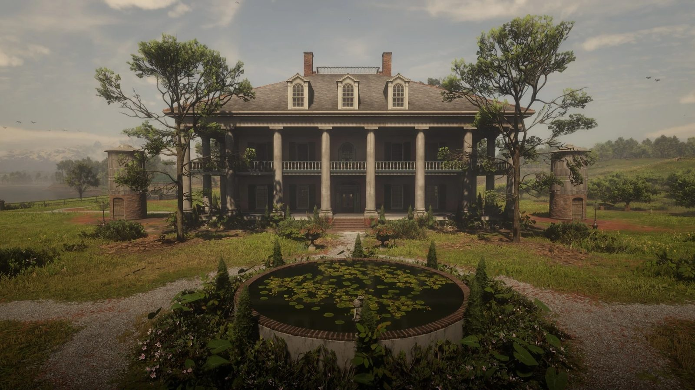
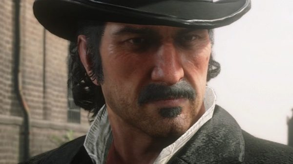
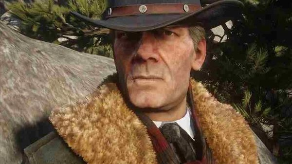
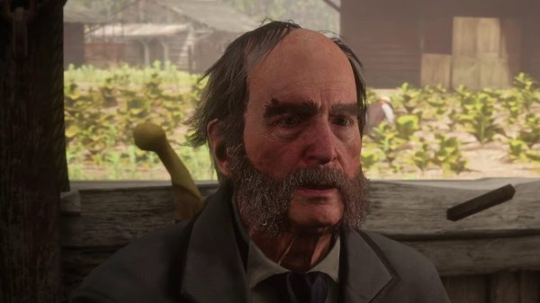
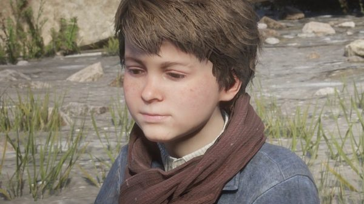
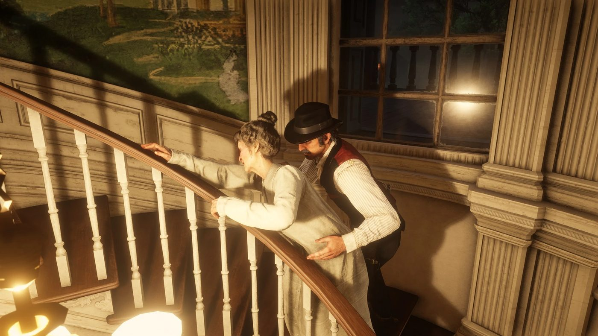

Character · Lemoyne
Catherine Braithwaite
Catherine Braithwaite is the head of the Braithwaite family, the owners of Braithwaite Manor near Rhodes, in Red Dead Redemption 2. She is the main antagonist of chapter 3.
Her family is locked in a feud with the Grays of Caliga Hall. Dutch van der Linde tries to play the two families against each other.
- Family
- Braithwaite
- Role
- Matriarch
- Residence
- Braithwaite Manor, near Rhodes
- Children
- Bartholomew, Gareth, Gerald, Gertrude
- Status
- Died in 1899
- Games
- Red Dead Redemption 2
Biography
The Braithwaite family
The Braithwaites are an old plantation family of English descent, based at Braithwaite Manor in Scarlett Meadows, Lemoyne. Catherine has three sons, Bartholomew, Gareth and Gerald, and a daughter, Gertrude. The family's feud with the Grays goes back generations.
Dealing with the gang
In "Advertising, The New American Art", Hosea and Arthur bring her a load of stolen moonshine. Her sons draw their guns, and she orders them to stand down. She already knows that Sheriff Leigh Gray sent the gang after the moonshine. She pays them to hand it out for free in the Grays' saloon in Rhodes.
In "The Fine Joys of Tobacco", over a game of cribbage with Hosea and Sean MacGuire, she hires Arthur and Sean to burn the Grays' tobacco fields at Caliga Hall.
Jack Marston's kidnapping
After the Grays' ambush in Rhodes, in which Sean is killed, the Braithwaites take revenge on the gang by kidnapping Jack Marston.
In "Blood Feuds, Ancient and Modern", the gang storms Braithwaite Manor. Dutch shoots Bartholomew dead at the start of the fight. Gareth and Gerald are killed inside the house. Jack is not there. Dutch orders the manor burned and drags Catherine outside.
She tells them that her sons handed Jack to Angelo Bronte, and that the boy is either in Saint Denis or on a boat to Italy.
Relationships

Dutch van der Linde
Plays her family against the Grays, then burns her house down.

Hosea Matthews
Works the Braithwaites on the gang's behalf.

Tavish Gray
Head of the rival Gray family.
Angelo Bronte
The Saint Denis crime boss her sons hand Jack to.

Jack Marston
The boy her family kidnaps.
Fate
The gang leaves her alive. She runs back into the burning manor and dies there, in 1899. From chapter 4 onwards, her body can be found in the ruins of Braithwaite Manor.
Behind the scenes
Catherine Braithwaite is played by Ellen Harvey. She is also mentioned in Red Dead Online, where Josiah Trelawny asks the player to steal one of her horses.
Gallery
